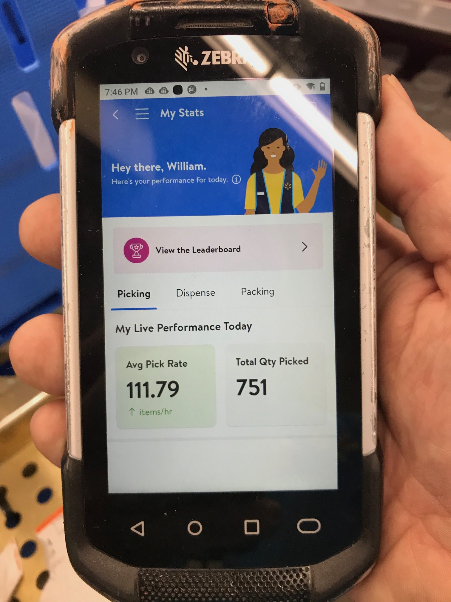
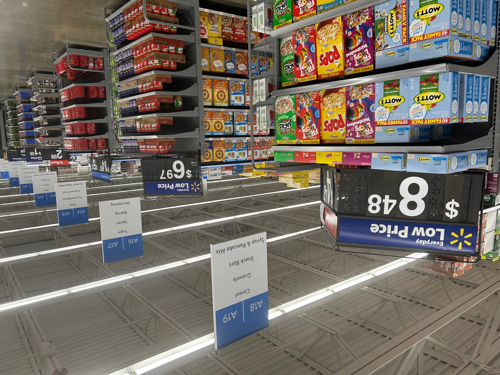
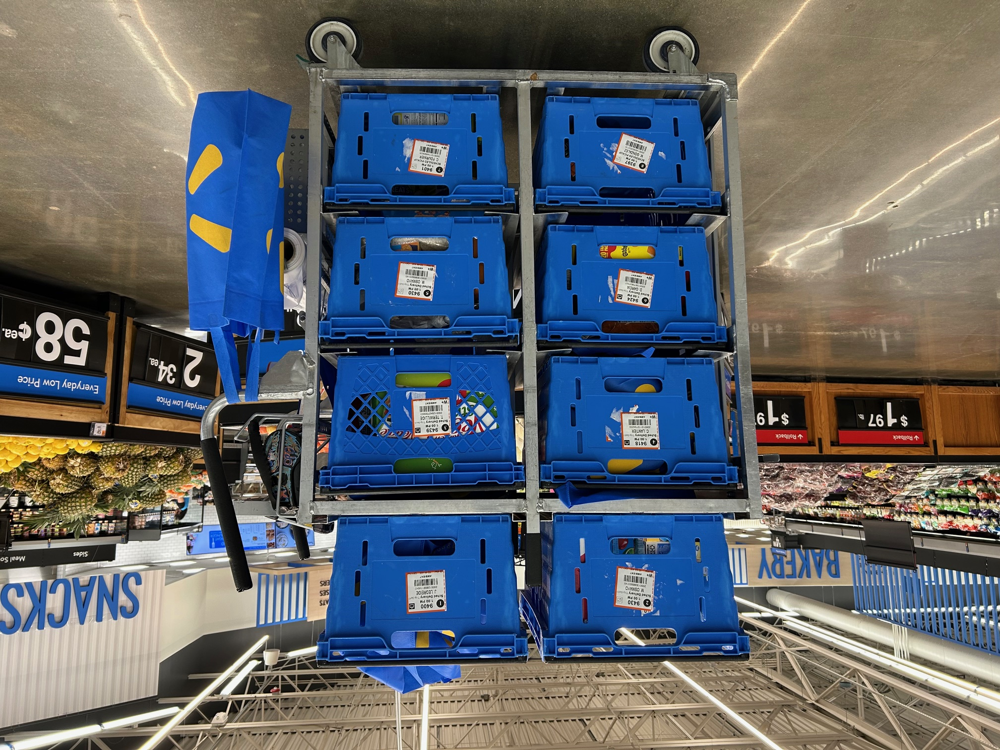

THE THREE STEPS OF ONLINE SHOPPING: The first step would be for the customer to go online using the stores website and pick out anything she or he wants to buy in the store. The next step would be for me to shop for those requested items and collect them in blue containers or totes which are on a pushing cart. I would transport those items to the proper place for storage within the Pick up department of the store. The last step would be to get those items to the customer, either by delivery to their home or a pick up (by the customer where they come into the store) at a set time.

And on a typical Pick Walk at Walmart, you see the Cereal being shopped for by me as it's in Aisle A-18, Section 3 and in Modular or Space 10. (top and below here)
 Working in a competitive corporate setting prepared me for a successful time as an personal online shopper, no doubt about it. I would place items in the circular from its data bases and make that page attractive. Now I am at store level, and I remember those items from the circular as I find them for real on the shelves of the aisles in an actual retail store like Walmart #2503, using a pushing cart with totes (above).
THE FUTURE IS NOW! LET'S CHAT! EMAIL ME
With my successful experiences from the store level, I will be able to return easily to the corporate world today breaming with more confidence and knowledge doing advertising type work.